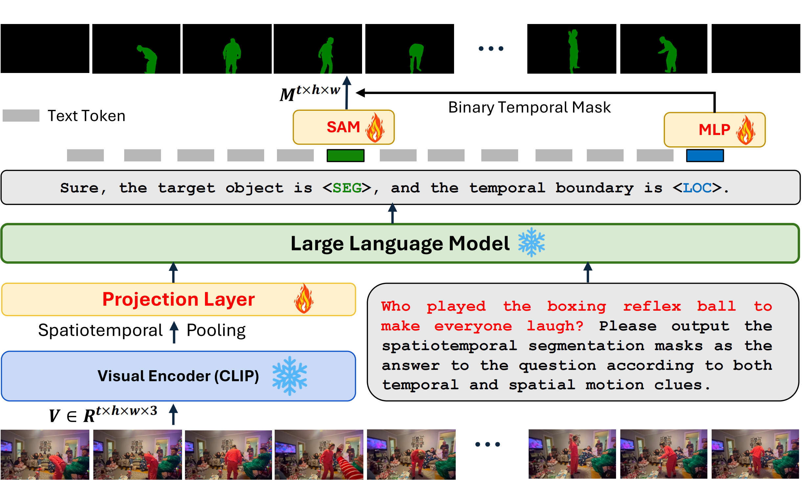

Motion-Grounded Video Reasoning:
Understanding and Perceiving Motion at Pixel Level
2 University of Western Australia 3 UNC, Chapel Hill 4 Shandong University
5 Amazon Web Services 6 University of Texas at Dallas
Abstract
In this paper, we introduce Motion-Grounded Video Reasoning, a new motion understanding task that requires generating spatiotemporal segmentation masks according to the input question, and hence needs implicit spatiotemporal reasoning and grounding. This task extends existing spatiotemporal grounding work that focuses on explicit action/motion recognition, to a more general format by enabling implicit motion reasoning via questions. To facilitate the development of advanced motion-grounding models on such a task, we collect a large-scale dataset called GroundMoRe, which comprises 1,673 video clips, 243K object masks that are deliberately designed with 4 types (Causal, Sequential, Counterfactual, and Descriptive) for benchmarking deep and comprehensive motion understanding abilities. Our GroundMoRe uniquely requires models to generate visual answers (spatiotemporal masks), providing a more concrete and visually interpretable response than plain text. It evaluates models on spatiotemporal grounding and reasoning, helping address complex challenges in video reasoning, temporal perception, and pixel-level understanding. To further facilitate the proposed task, we propose a baseline model, Motion-Grounded Video Reasoning Assistant (model). \model incorporates the multimodal reasoning ability from Multimodal LLM and the pixel-level perception capability from the grounding model (SAM) as well as an additional temporal localization head. \model achieves respectable performance on GroundMoRe outperforming the best existing visual grounding baseline model by an average of 28.8\% relatively, but there still remains substantial room for interesting future improvements by the community. We hope this novel and challenging task will pave the way for future advancements in robust and general motion understanding via video reasoning segmentation.
Overview of our GroundMoRe

Visualizations of our proposed GroundMoRe. As shown, our GroundMoRe requires advanced motion reasoning abilities in diverse scenarios. As illustrated in the fourth row of the figure, the question What might not be held by the man if it had not been unwrapped from the paper? requires the model to reason the wrapping relationship between the man, the paper and the piston as well as the causal connections in the challenging counterfactual setting. Additionally, we can observe from the case in the seventh row that our GroundMoRe includes spatiotemporal grounding context as well as motion-related attributes understanding. The answer to the question Who might not have fallen into the blue cushion on the wall if he had not tripped while trying to defend? can only be determined at the end of the video clip. For the question Who is the more offensive player?, the model must infer motion-based implicit attributes from the video sequence, demonstrating a strong need for world-level commonsense reasoning ability.
GroundMoRe Statistics
Question and Scene Type Distribution of GroundMoRe.

Word cloud of the top 100 words in the question annotation in our GroundMoRe dataset.
Verb distribution of the motion concepts in GroundMoRe.
Object distribution of GroundMoRe.
More statistics of GroundMoRe.
Sankey diagram on the interaction triplets of our GroundMoRe.
Overview of our proposed baseline MoRA

An overview of our proposed baseline MoRA. MoRA adopts the spatiotemporal pooling strategy and
inserts the extra special [SEG] token.
Additionally, to enable the temporal localization ability, MoRA takes advantage of the extra
[LOC]
token to learn a binary temporal mask, which refines the direct SAM outputs.
Quantitative Results
Motion-Grounded Video Reasoning results on our GroundMoRe. We compare all methods in a zero-shot setting. We bold the best numbers, and underlined the second-best numbers.
BibTex
@article{
groundmore,
title={Motion-Grounded Video Reasoning: Understanding and Perceiving Motion at Pixel Level},
author={Andong Deng, Tongjia Chen, Shoubin Yu, Wenshuo Chen, Taojiannan Yang, Lincoln Spencer, Erhang Zhang, Yapeng Tian, Ajmal Saeed Mian, Mohit Bansal, Chen Chen.},
booktitle={arxiv preprint},
year={2024},
}